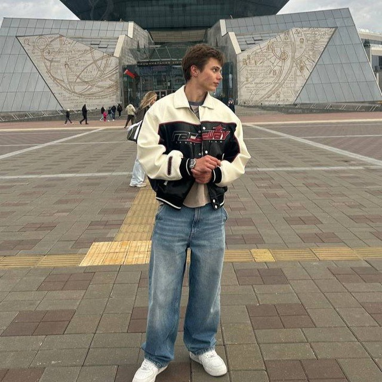

Привет. Меня зовут Мамонт.
Илья — человек, который не ждал удобного момента
Он не родился в семье с капиталом. Не получил наследства. Не выиграл в лотерею. Илья родился в обычной квартире, где интернет ловил через один палец на подоконнике, а слово «перспектива» звучало как что-то из учебника. Но именно там, в тишине провинциальной комнаты, он впервые понял простую истину: если не ты — то кто?
Первые шаги: там, где другие сдавались
Пока сверстники искали легкие деньги, Илья учился главному — видеть возможности там, где их не видят другие. Он начинал с малого: первые заказы, первые клиенты, первые ошибки, которые стоили дороже, чем он мог себе позволить. Он не спал ночами, разбираясь в схемах закупок, логистике, переговорах. Он падал. И поднимался. Потому что падать — это не провал. Провал — это остаться лежать.
Перелом: Telegram как территория возможностей
Когда рынок только начинал понимать, что Telegram — это не просто мессенджер, а целая экосистема бизнеса, Илья уже был там. Он одним из первых осознал: здесь можно строить, продавать, масштабироваться. Он стал тем, кто не просто «работает в Telegram» — он стал менеджером, который управляет процессами, и закупщиком, который знает цену каждой сделке. Он выстраивал цепочки поставок, находил партнеров, закрывал сделки, которые другим казались невозможными. Его телефон не замолкал. Его репутация росла быстрее, чем он успевал это осознавать.
Сегодня: результат, который говорит сам за себя
Сегодня Илья — миллионер. Не потому что ему повезло. А потому что он сделал себя сам — из грязи в князи, шаг за шагом, сделка за сделкой, ночь за ночью. Он прошел путь от человека без связей и капитала до фигуры, с которой считаются. Он не рассказывает о трудностях — он показывает результат. Он не просит места за столом — он строит свой.
Илья. Менеджер. Закупщик. Миллионер. Человек, который не ждал удобного момента — он его создал.